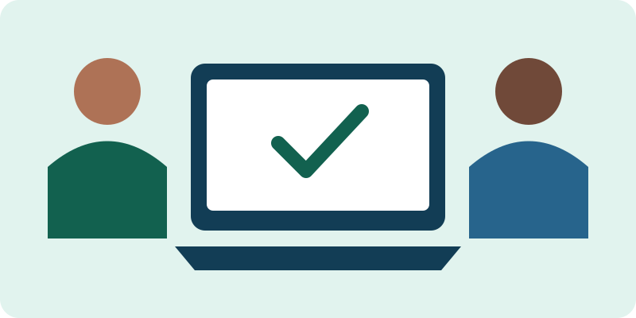
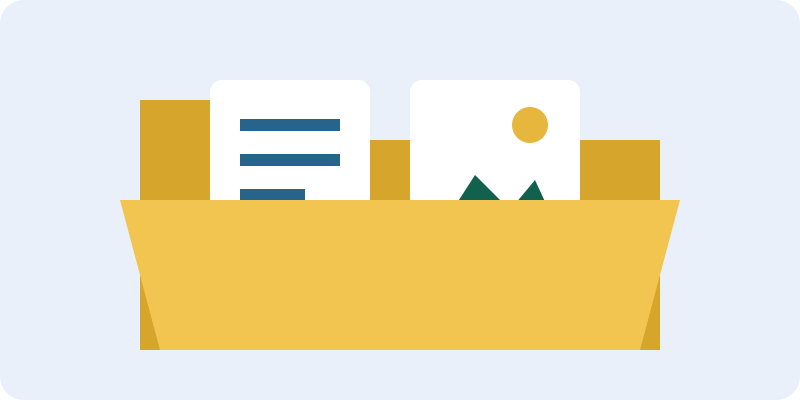

Tecnologia para o dia a dia

Este laboratório funciona offline depois de extrair a pasta completa. Não usa cadastro e não envia suas respostas.
Use somente exemplos fictícios. Ao recarregar, as respostas e pastas simuladas desaparecem. Os arquivos baixados permanecem no seu dispositivo.
1. Crie sua primeira pasta

Pastas agrupam arquivos. Use nomes claros, como Estudos ou Fotos da oficina.
Para criar uma pasta real, abra o gerenciador de arquivos do dispositivo e procure a opção “Nova pasta”. O nome e a posição dessa opção variam conforme o sistema.
2. Reconheça os tipos de arquivo
Nem todo arquivo de imagem é uma foto: SVG guarda desenhos vetoriais que podem ser ampliados sem perder definição.
3. Prepare uma mensagem
Simulador de e-mail: destinatário fictício oficina@example.org. Nenhum envio é realizado.
4. Escreva e baixe um arquivo
Depois de baixar, encontre o arquivo, abra e mova para uma pasta de estudos usando o gerenciador do seu dispositivo.
Baixar roteiro de exercícioMeu progresso
0 de 4 desafios concluídos. Progresso temporário.
Palavras que você já pode usar
- Navegador
- Programa usado para abrir páginas da web.
- Download
- Trazer um arquivo para seu dispositivo.
- Pasta
- Local para organizar arquivos.
- Extensão
- Parte final do nome, como .txt, que indica um formato de arquivo.